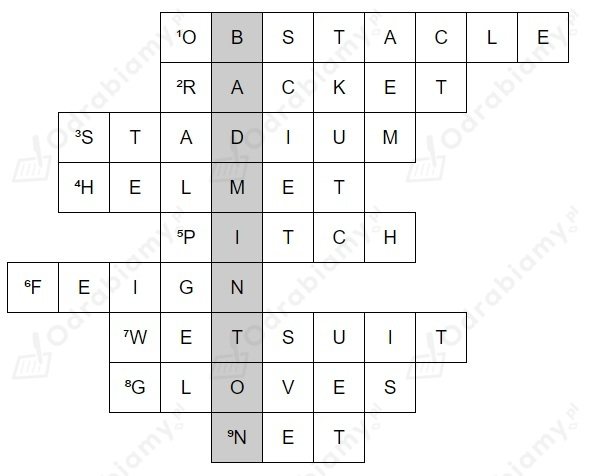

Uwaga! Wstawione odpowiedzi zostały pogrubione w tłumaczeniu.
1. medal, trophy, tournament
(Ostatnio zdobyłem/am medal i piękne trofeum za zajęcie pierwszego miejsca w szkolnym turnieju sportowym.)
2. work out
(Przynajmniej raz w tygodniu ćwiczę na siłowni.)
3. lose, score
(Nasze szkolne drużyny sportowe nigdy nie przegrywają meczów z innymi drużynami, ponieważ zawsze zdobywają mnóstwo punktów.)
4. athlete, train
(Chciał(a)bym być profesjonalnym/ą lekkoatletą/tką, więc codziennie ciężko trenuję.)
5. break, record
(Chciał(a)bym pewnego dnia pobić rekord świata w czasie w biegu na 1500 metrów.)
6. hold, track
(Moja szkoła będzie niedługo organizować zawody sportowe. Mamy nowy tor wyścigowy na boisku szkolnym.)
Uwaga! Wstawione odpowiedzi zostały pogrubione w tłumaczeniu.
1. obstacle
(Coś, przez co biegacze muszą przeskakiwać w specjalnym wyścigu. - przeszkody)
2. racket
(Potrzebujesz tego do gry w tenisa. - rakieta)
3. stadium
(Miejsce, do którego idziesz, żeby obejrzeć mecz piłki nożnej. - stadion)
4. helmet
(Chroni twoją głowę. - kask)
5. pitch
(Trawiaste miejsce, do którego gracze przychodzą uprawiać sport. - boisko)
6. feign
(Słowo, które ma podobne znaczenie do "udawać". Używamy go do opisania, że ktoś udaje kontuzję. - symulować)
7. wetsuit
(Surfingowcy zakładają go, żeby było im ciepło w wodzie. - strój piankowy)
8. gloves
(Niektórzy ludzie noszą je, żeby było im ciepło, ale bokserzy używają ich, żeby nie zrobić sobie poważnej krzywdy. - rękawice)
9. net
(W niektórych sportach próbujesz przerzucić przez nią piłkę. W piłce nożnej chcesz, żeby piłka do niej wleciała. - siatka)

1. to build
Uzasadnienie: po czasowniku, po którym występuje zaimek pytający (learn how - nauczyć się jak) używamy bezokolicznika z to.
2. arriving
Uzasadnienie: po przyimkach (before - zanim) używamy formy z -ing.
3. to row
Uzasadnienie: po czasowniku manage (dać radę) używamy bezokolicznika z to.
4. to rest
Uzasadnienie: kiedy czasownik stop oznacza "zatrzymać się, żeby coś zrobić", używamy po nim bezokolicznika z to.
5. talking
Uzasadnienie: po czasowniku miss (tęsknić) używamy formy z -ing.
6. Walking
Uzasadnienie: jako podmiotu w zdaniu używamy czasownika w formie z -ing.
Uwaga! Wybrane odpowiedzi zostały pogrubione w tłumaczeniu.
1. b
(Jest mnóstwo sklepów w mieście. To wspaniale mieć tak duży wybór.)
2. b
(Pojechałem/am na dwa dni w góry i każdego dnia pokonałem/am ponad 20 kilometrów.)
3. a
Uzasadnienie: a few - kilku. Pozostałe nie pasują, bo brakuje w zdaniu innych słów (a number of; plenty of).
4. b
Uzasadnienie: używamy określenia none, by mówić o większej ilości ludzi. Neither odnosi się do dwóch osób.
5. c
Uzasadnienie: do opisania dwóch osób używamy określenia both (oboje, obaj, obie).
1. Running
Uzasadnienie: jako podmiotu w zdaniu używamy czasownika w formie z -ing.
2. who
Uzasadnienie: używamy zaimka względnego who, aby wprowadzić zdanie podrzędne zawierające informacje o jakiejś osobie.
3. has achieved
Uzasadnienie: do opisania, że kilka czynności zostało wykonywanych do tej pory, używamy czasu present perfect (have/has + past participle - III kolumna w tabeli czasowników nieregularnych lub końcówka -ed).
4. had
Uzasadnienie: do opisania, że jakieś krótkie wydarzenie odbyło się w trakcie wykonywania dłuższej czynności, używamy czasu past simple.
5. was running
Uzasadnienie: do opisania dłuższej czynności, która była w trakcie w przeszłości używamy czasu past continuous (was/were + czasownik z -ing).
6. hadn't found
Uzasadnienie: do opisania, że jakaś czynność odbyła się przed innymi wydarzeniami w przeszłości, używamy czasu past perfect (had + past participle)
7. was removed
Uzasadnienie: to zdanie opisuje czynność wykonaną względem jakiejś rzeczy, dlatego należy użyć strony biernej. Do opisania, że czynność odbyła się w konkretnym momencie w przeszłości, używamy czasu past simple (w stronie biernej: was/were + past participle)
8. might have stopped
Uzasadnienie: do wyrażenia spekulacji, że jakaś sytuacja mogła się odbyć w przeszłości, używamy konstrukcji might have + past participle.
9. learning
Uzasadnienie: po przyimkach (after - po) używamy formy z -ing.
10. competing/to compete
Uzasadnienie: po czasowniku start (zacząć) możemy użyć zarówno bezokolicznika z to, jak i formy z -ing.
11. will still be running
Uzasadnienie: do opisania, że jakaś czynność będzie w trakcie wykonywania w danym momencie w przyszłości, używamy czasu future continuous (will be + czasownik z -ing).
12. many
Uzasadnienie: przed rzeczownikiem policzalnym w liczbie mnogiej używamy określenia many (wiele).